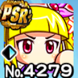

イベキャラ データ
神埼こりす 評価・イベントまとめ
読み：かんざきこりす
神埼こりすの基本情報
| 初登場日 | 2026/05/14 |
|---|---|
| 得意練習 | なし |
| イベント前後 | 後 |
| 役割 | ガード |
| 野手金特 | 広角砲＋内角必打 一球入魂＋内角必打 |
| 投手金特 | 強心臓＋ド根性 クロスキャノン＋ド根性 |
| 基礎上限 | 肩力上限：8 |
| 友情特殊能力 | なし |
| 練習改革 | なし |
| アイテム追加枠 | なし |
神埼こりすの重要ボーナス
| 精神ボーナス | 6(固有) |
|---|---|
| 練習効果アップ | 10% |
| 肩力上限アップ | 8 |
その他ボーナスはこちらをタップ
| 試合経験点ボーナス | 20%⇒25%(PSR42)⇒30%(Lv45) |
|---|---|
| 初期評価 | 40⇒45(SR37)⇒50(SR40)⇒60(PSR40) |
| サポ：獲得経験点上限 | 76500(SR) 80000(PSR) |
| イベントボーナス | 60%⇒100%(Lv50) |
| イベント体力回復量アップ | 60%⇒100%(Lv50) |
| 練習ケガ率ダウン | 3 |
| 練習体力消費量ダウン | 20% |
神埼こりすのイベント詳細
告白
| ＋ | |
|---|---|
| 告白する （彼女になる） | 体力+ 筋力+ 敏捷(変化球)+ 精神+ |
| 告白しない （彼女にならない） | こりす評価-5 敏捷(変化球)+ 技術++ 精神++++ |
デート
・1回目
| ＋ |
|---|
体力+ こりす評価+5 敏捷(変化球)+ 精神+ |
・2回目
| ＋ |
|---|
体力+ こりす評価+5 技術++ 精神+ |
・3回目
| ＋ | その他 | |
|---|---|---|
| 一緒に行こう！ | こりす評価+5 筋力++ 敏捷(変化球)++ | 【野手】 逆境〇 【投手】 クイック |
| 早く乗って！ | こりす評価+5 敏捷(変化球)++ 精神++ | 【野手】 窮地〇 【投手】 対ピンチ |
・4回目
| ＋ | その他 | |
|---|---|---|
| 3回目で「一緒に行こう！」選択時 | 体力+ こりす評価+5 敏捷(変化球)++++ 精神++++ | 【野手】 広角砲 【投手】 強心臓 |
| 3回目で「早く乗って！」選択時 | 体力+ こりす評価+5 技術++++ 精神++++ | 【野手】 一球入魂 【投手】 クロスキャノン |
・5回目
| ＋ | その他 |
|---|---|
体力++ やる気+1 こりす評価+10 筋力++ 敏捷(変化球)++ 技術++ 精神++ | 【野手】 広角打法 【投手】 要所〇 |
クリスマス
| ＋ | その他 |
|---|---|
体力++ こりす評価+10 筋力++ 敏捷(変化球)++ 技術++ 精神++ | 【野手】 接戦〇 【投手】 クロスファイヤー |
初詣
※評価が低いと発生しない
<お賽銭>
| ＋ | |
|---|---|
| 野球がうまくなりたい | 筋力++ 敏捷(変化球)++ 技術++ 精神++ |
| 健康に過ごしたい | 体力最大値+8 体力++ |
| こりすちゃんと仲良くなりたい | こりす評価+15 |
<おみくじ>
| ＋ | |
|---|---|
| 大吉 | 体力++ やる気+ 筋力++ 敏捷(変化球)++ 技術++ 精神++ |
| 中吉 | 体力+ やる気+ 筋力+ 敏捷(変化球)+ 技術+ 精神+ |
| 小吉 | 精神++ |
| 主人公だけ大吉 | やる気- 精神+ |
バレンタイン
| ＋ |
|---|
体力++ やる気+ こりす評価+5 筋力++ 敏捷(変化球)++ 技術++ 精神++ |
エピローグ
※デート5回目を行ってないと金特を獲得出来ない
| ＋ | その他 | |
|---|---|---|
| 評価145以上 | 筋力++++ 敏捷(変化球)++++ 技術++++ 精神++++ | 【野手】 内角必打 【投手】 ド根性 |
| 評価125〜144 | 筋力++ 敏捷(変化球)++ 技術++ 精神++ | 【野手】 内角必打 【投手】 ド根性 |
| 評価125未満 | 筋力+ 敏捷(変化球)+ 技術+ 精神+ | 【野手】 内角必打 【投手】 ド根性 |
共通イベント
・自己紹介
| ＋ |
|---|
体力+ こりす評価+5 |
・好きじゃないのに
| ＋ | |
|---|---|
| どんな中学生だったの？ | こりす評価+5 敏捷(変化球)++++ |
| 話し方も変えたの？ | こりす評価+5 技術++++ |
| （評価低いと選択肢なし） | こりす評価+5 筋力+ |
神埼こりすのコンボイベント
オリジナルとロボットの乙女心
| コンボキャラ | DJB-K、 |
|---|---|
| イベント前後 | 後 |
| ＋ | その他 | |
|---|---|---|
| 似てる | 体力+ DJB評価+5 こりす評価+5 筋力+ 技術+ 精神+ | 【野手】 かく乱 【投手】 キレ〇 |
| 似てない （成功） | DJB評価+5 こりす評価+5 筋力+++ 敏捷(変化球)+++ | 【野手】 打球ノビ 【投手】 ノビ |
| 似てない （失敗） | DJB評価+5 こりす評価+5 筋力+ 敏捷(変化球)+ | 【野手】 打球ノビ 【投手】 ノビ |
神埼こりすの評価
神埼こりすの使用デッキ例


神埼こりすの選手能力
| 選手ランク | 不明 |
|---|---|
| メインポジション | 不明 |
| サブポジション | なし |
| 利き腕 | 不明 |